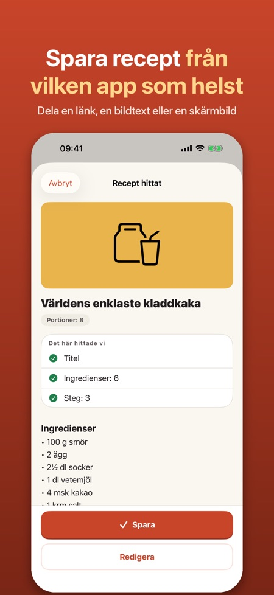
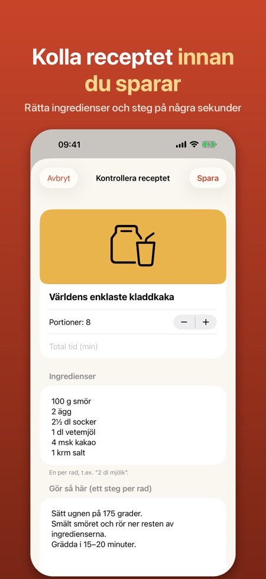
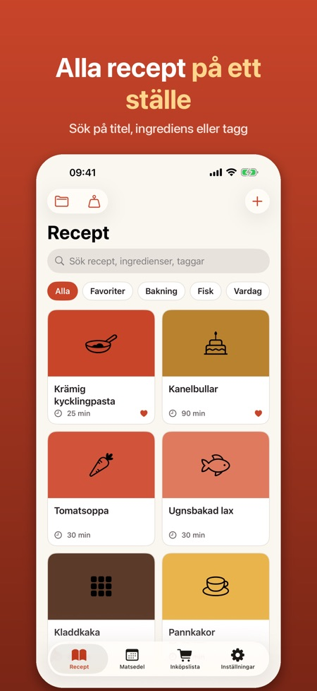

Matsedel och inköpslista. Dela ett recept från en app eller webbplats och få ett snyggt receptkort med ingredienser, steg och tid. Skala portioner, laga mat steg för steg och planera veckan.



Har du sett ett recept i en app eller på en webbplats? Dela det till appen, så blir det ett snyggt receptkort som du kan laga mat efter.
SÅ SPARAR DU
• Tryck Dela i Safari, Instagram, TikTok eller en annan app och välj Recept
• Länkar till receptsajter läses automatiskt: titel, ingredienser, steg, tid, portioner och bild
• Från sociala medier används texten du delar eller klistrar in, eller en skärmbild (Pro)
• Du ser alltid receptet innan det sparas och kan rätta allt
LAGA MAT
• Matlagningsläge med stor text, ett steg i taget, och skärmen förblir tänd
• Timrar hittas i texten ("låt puttra i 5 min") och startas med ett tryck
• Skala portioner upp och ner
• Omvandla cups och ounces till dl och gram, och tbsp/tsp till msk/tsk
PLANERA OCH HANDLA
• Inköpslista: välj ingredienser, och likadana varor slås ihop (2 dl + 1 dl mjölk = 3 dl)
• Dela listan eller exportera den till Påminnelser
• Veckans matsedel: dra recept till dagarna och lägg hela veckan på inköpslistan (Pro)
DIN SAMLING
• Sök i titlar, ingredienser och taggar
• Favoriter, taggar och samlingar (samlingar med Pro)
• Källänken sparas, så du alltid ser var receptet kommer ifrån
FÖRSTÅR NORDISKA RECEPT
Appen läser recept på svenska, norska, danska, finska och engelska och känner till mått som dl, msk, tsk, krm, ss, ts, spsk, rkl och tl.
PRO
Utan Pro kan du spara upp till 15 recept och använda matlagningsläge och inköpslista. Pro ger obegränsat antal recept, läsning av skärmbilder, smart import (på enheter med Apple Intelligence), matsedel och samlingar. Välj årsprenumeration eller engångsköp. Prenumerationen förnyas automatiskt om det inte sägs upp senast 24 timmar före periodens slut och kan sägas upp i Inställningar under ditt namn > Prenumerationer.
INTEGRITET
Inget konto och ingen reklam. Dina recept stannar i telefonen. Appen loggar aldrig in på sociala medier och hämtar bara det du själv delar.
Appen är oberoende och inte ansluten till Instagram, TikTok, Meta eller andra nämnda tjänster. Varumärken tillhör sina ägare.